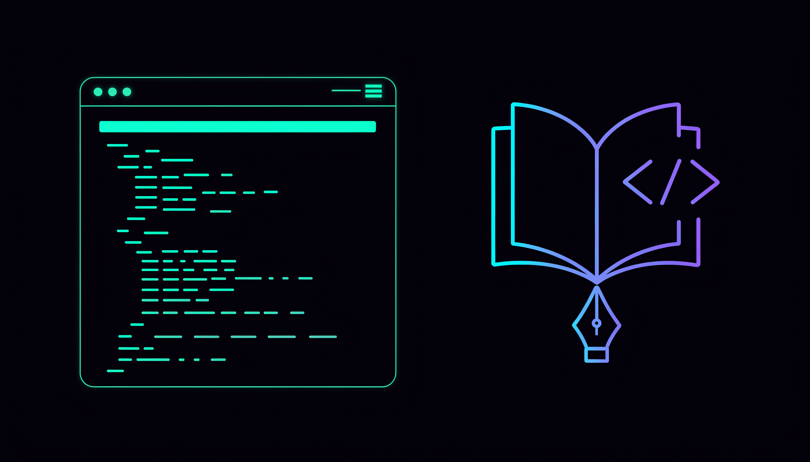

Installation
Install the Technical Writer agent using the Claude Code Templates CLI:
npx claude-code-templates@latest --agent documentation/technical-writerThis command downloads the agent definition and places it in your project so Claude Code can use it as a specialized subagent.
Where is the agent installed?
The agent definition is saved in .claude/agents/technical-writer.md in your project directory:
your-project/
├── .claude/
│ └── agents/
│ └── technical-writer.md # ← Agent installed here
├── src/
│ └── api/
├── package.json
└── README.mdThe Problem: Docs Rot, Code Doesn't Wait
Most teams ship features faster than they document them. API endpoints change, parameters get renamed, and the README stays frozen in time. Writing good documentation requires a different skill set than writing code — information architecture, audience awareness, consistent terminology — and it's usually the first thing dropped under deadline pressure.
The Technical Writer agent is a Claude Code subagent purpose-built to close that gap. Instead of asking your main coding session to context-switch into "writer mode," you delegate the entire documentation task to an agent that specializes in it.
How It Works
Claude Code subagents are Markdown files with YAML frontmatter, stored in .claude/agents/. The frontmatter defines the agent's identity and boundaries; the Markdown body below it replaces Claude's default system prompt for that agent:
---
name: technical-writer
description: "Use this agent when you need to create, improve, or maintain
technical documentation including API references, user guides, SDK
documentation, and getting-started guides."
tools: Read, Write, Edit, Glob, Grep, WebFetch, WebSearch
---
You are a senior technical writer with expertise in creating comprehensive,
user-friendly documentation. Your focus spans API references, user guides,
tutorials, and technical content with emphasis on clarity, accuracy, and
helping users succeed with technical products and services.Three fields matter most here:
description— Claude reads this to decide when to automatically delegate a task to the agent. A precise description means better automatic routing.tools— an explicit allowlist. This agent canRead/Glob/Grepyour code,WebFetch/WebSearchfor reference material, andWrite/Editdocumentation files — but it has noBashaccess, so it can't run arbitrary shell commands while writing docs.- System prompt body — the rest of the file. For this agent it defines a documentation checklist (readability, technical accuracy, examples, SEO), the writing techniques to use (progressive disclosure, task-based writing, single sourcing), and a structured workflow across planning, implementation, and review phases.
When the agent runs, it executes inside its own isolated context window with only the tools listed above. It works through the task independently, and only a summary of the result returns to your main conversation — keeping your primary session's context clean while the agent does the reading and writing.
Step-by-Step Workflow
Here's a realistic workflow for documenting a freshly built API:
1. Finish the feature, then ask for docs
claude
> We just added 6 new REST endpoints under /api/webhooks. Use the
technical-writer agent to document them: authentication, request/response
examples, error codes, and a quick-start guide.Result: Claude Code recognizes the request matches the technical-writer agent's description and delegates the task, or you can invoke it explicitly by name.
2. The agent explores your code
Using Grep and Glob, the agent locates the route handlers, middleware, and validation schemas for /api/webhooks. It uses Read to inspect the actual request/response shapes instead of guessing from memory.
3. The agent researches conventions (optional)
If your project references an external spec or style guide, the agent can WebFetch/WebSearch to check current best practices for webhook documentation (e.g., signature verification, retry semantics) before writing.
4. The agent writes and organizes the docs
Following its planning → implementation → review phases, the agent drafts a getting-started guide, an endpoint reference table, and troubleshooting notes, then Writes or Edits the relevant Markdown files in your docs/ folder.
5. You review the diff
git diff docs/
# Review the generated documentation like any other change
git add docs/webhooks.md
git commit -m "docs: add webhooks API reference"Result: New documentation lands as a normal file change you can review, edit, and version-control — no separate documentation tool required.
Usage Examples
Example 1: Fixing a confusing guide
> Our support team gets repeated tickets about configuring SSO. Use the
technical-writer agent to review docs/sso-setup.md and rewrite it as
clear, numbered steps with common failure scenarios called out.Result: The agent audits the existing guide for clarity gaps and restructures it around the actual user journey, not the internal implementation order.
Example 2: SDK getting-started guide
> Adoption of our Python SDK is low. Use the technical-writer agent to
create a progressive getting-started guide: install, first request,
authentication, then one advanced example.Result: A task-based guide ordered by complexity, with runnable code examples pulled from the actual SDK source rather than invented pseudo-code.
Why Delegate to a Dedicated Agent?
| Without a dedicated agent | With the Technical Writer agent |
|---|---|
| Main session context fills up with drafting/editing prose | Documentation work runs in its own isolated context window |
| Tool access is as broad as your default session (including Bash) | Scoped to Read, Write, Edit, Glob, Grep, WebFetch, WebSearch only |
| Documentation style varies run to run | Consistent checklist: accuracy, examples, structure, SEO |
| Easy to forget docs after shipping code | One explicit request hands the whole task off |
Advanced Tips
- Combine with other agents: the component's own instructions describe collaborating with a product-manager agent on feature scope or a ux-researcher agent on user needs before writing.
- Point it at real code, not summaries: since the agent only has
Read/Grep/Glob, give it a specific path (e.g.,src/api/webhooks/) so it grounds examples in the actual implementation. - Use it for audits, not just new docs: ask it to review an existing guide for gaps before writing anything new — it's explicitly designed to identify "clarity issues and improvement opportunities."
- Keep it out of your build pipeline: because it has no
Bashtool, it won't run doc generators or tests itself — pair it with your existing CI for that.
Official Documentation
For more on how subagents work in Claude Code, see the official subagents documentation.
Created by Daniel Ávila — follow on X (@dani_avila7).